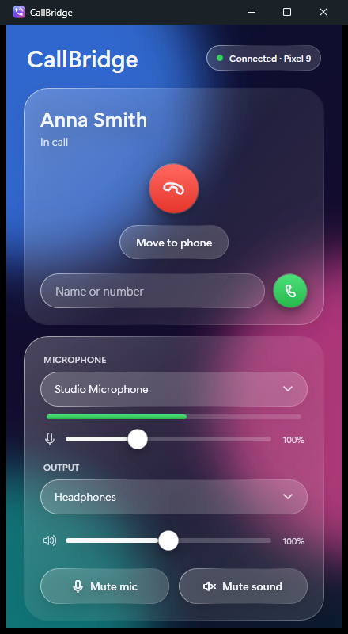
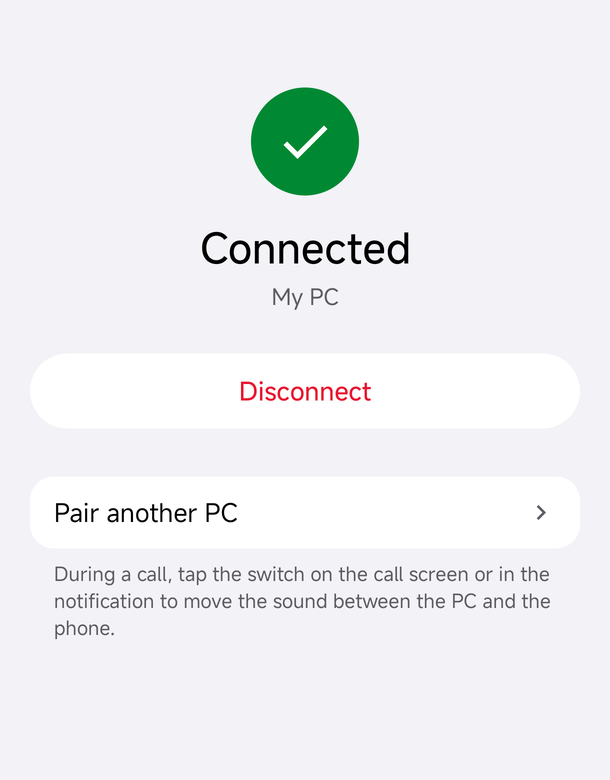
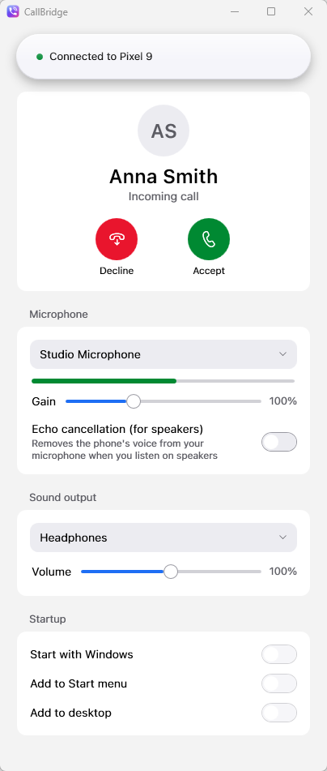
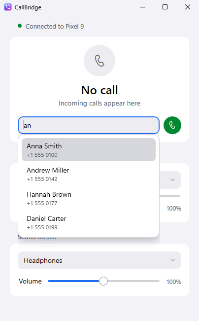
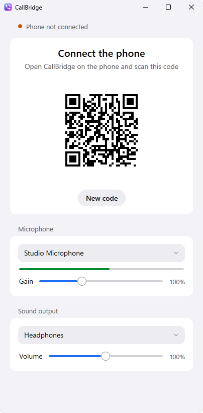

Phone calls, on your PC.
Hear callers in the headphones you choose and talk into the microphone you choose. The phone stays silent in your pocket.


Everything happens on the PC
-
A silent phone
The phone’s speaker and microphone stay off while the call runs on the PC.
-
Any microphone and headphones
Choose the devices in the Windows app, and change them even during a call.
-
Move a call at any time
Switch a running call between the PC and the phone from either device.
-
Calls from the keyboard
Type a name or a number, choose a contact and press Enter. Shortcuts cover mute and hanging up.
-
Stays on your own network
The phone connects straight to the PC over Wi-Fi or USB. There’s no account and no cloud service.
-
Out of the way until it rings
CallBridge waits in the tray and shows a notification when a call comes in.
A closer look
The apps follow the light or dark appearance you already chose for your system.



Set up in three steps
-
Install on the phone
Flash
callbridge-magisk.zipin the Magisk app, then restart the phone. -
Start on the PC
Open
CallBridge.exe. It needs no installation and shows a QR code. -
Scan the code
Open CallBridge on the phone and tap Scan QR code. Next time, just tap Connect.
Requirements
- Phone
- Android 12 or later with root (Magisk). Tested on a Redmi K50 Ultra with HyperOS 3.
- PC
- Windows 10 or 11, on the same network as the phone or connected by USB.
Keep Bluetooth headsets disconnected from the phone during calls on the PC. Android can’t mute a Bluetooth headset’s microphone, so it would stay live in the call.